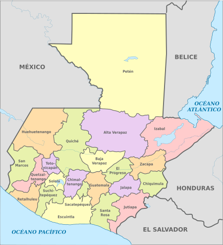

Guatemala (náhuatl: Quauhtlemallan, "lugar de muchos árboles"),7 oficialmente República de Guatemala, es un país soberano situado en América Central en su extremo noroccidental, en los países angloparlantes y otros lo sitúan en América del Norte.8 Su cultura latinoamericana cuenta con una amplia cultura autóctona producto de la cultura maya y la cultura castellana durante la época virreinal española; es el país más poblado de América Central, con 16,301,286 de habitantes según censo realizado en el año 2018

Historia de Nicaragua
Las tierras bajas del Petén, en el norte del país, fueron el hogar de la civilización maya clásica, cuyo apogeo se situó entre los siglos VII y IX d.c. Los Mayas fueron el origen de la difusión del arte, la arquitectura, la cerámica y la escritura guatemaltecos, y el sitio de Tikal abriga aún las ruinas de 3000 estructuras, entre ellos, templos piramidales, plazas y numerosos monumentos. Entre 1250 y 1520 fueron organizados los primeros estados (Quiché, Cakchiquel), cuyas guerras perpetuas debieron facilitar la colonización española.
Fue el lugarteniente de Hernán Cortés, Pedro de Alvarado, quien conquistó el país, en 1524. Santiago de Guatemala, la primera capital, fue fundada en 1527. En 1542, el país formó la capitanería general de Guatemala, bajo la dependencia del virrey de México.El país proclamó su independencia el 15 de septiembre de 1821, para ser inmediatamente integrado al imperio mexicano de Iturbide. Recuperó su autonomía en 1823 y luego formó parte de las Provincias Unidas de América Central, constituidas por las actuales Guatemala, Honduras, Salvador, Nicaragua y Costa Rica. La federación se dislocó en 1839 después de una revuelta dirigida por el guatemalteco Rafael Carrera, proclamado presidente vitalicio en 1854.
Gobierno y política
La actual política de Guatemala está regida por la Constitución Política de la República de Guatemala de 1985 y reformada en 1993 en la que se establece a Guatemala como un Estado libre, independiente y soberano. Su sistema de gobierno es republicano, democrático, representativo y organizado.
Organismo ejecutivo
Este organismo o poder es ejercido por el Presidente de la República de Guatemala, el Vicepresidente de la República de Guatemala y el Consejo de Ministros y por la demás entidades públicas correspondientes a este organismo.
Organismo legislativo
Este organismo o poder está ejercido por el Congreso de la República de Guatemala, el cual consta de un hemiciclo formado por 158 diputados de los diferentes distritos electorales para un período de gestión de cuatro años pudiendo ser reelectos mediante el sufragio universal y secreto.
Organismo Judicial
Este organismo es ejercido por la Corte Suprema de Justicia de la República de Guatemala la cual está conformada por 13 magistrados electos por el Congreso de la República para un período de gestión de cinco años. La función de dicho organismo está establecida en la ley, que establece que la Corte Suprema de Justicia podrá administrar la justicia conforme lo dicte la Constitución y las demás leyes.
Organización territorial

Guatemala está organizada en ocho regiones, veintidós departamentos y trescientos cuarenta municipios.
Su geografía física es en gran parte montañosa. Posee suaves playas en su litoral del Pacífico y planicies bajas al norte del país. Es atravesada en su parte central por la Cordillera de los Cuchumatanes y parte de la Sierra Madre del Sur.
Turismo
Mejores lugares turísticos de Nicaragua.
El turismo se convirtió en uno de los motores principales de la economía, una industria que reportó más de $1800 millones en el año 2008. Guatemala recibe alrededor de dos millones de turistas anualmente.En los últimos años se ha originado la visita de muchos cruceros que tocan puertos marítimos importantes de Guatemala, lo que conlleva la visita de más turistas al país.
1. Antigua Guatemala.
A 25 kilómetros de la capital se ubica esta ilustre localidad colonial. Durante su historia fue llamada con varios nombres, el primero fue Santiago de los Caballeros de Guatemala. Con él permaneció durante la colonia, pero hoy sencillamente se le denomina Antigua.
Antigua fue la capital de la capitanía desde 1541 hasta 1776 y durante ese tiempo se construyeron la mayoría de las impresionantes edificaciones, indiscutibles lugares históricos de Guatemala. Entre las que debes visitar están los palacios de los capitanes generales y el del ayuntamiento, el arco de Santa Calina y el convento de la Merced, la antigua catedral. La ciudad fue declarada Patrimonio de la Humanidad por la Unesco en 1979.
2. Semuc Champey
Semuc Champey es considerada una de las mejores piscinas naturales del mundo y uno de los mejores destinos turísticos de Guatemala. Para llegar allí, puedes partir de Cobán, en el centro de la nación chapina.
La formación de este paisaje fue lenta. Durante milenios cayó un fino polvo de caliza desde las montañas adyacentes y formó de manera natural un puente sobre el río Cahabón. Hoy la corriente fluye debajo de las pozas por una cueva durante un buen trayecto y luego hace su aparición ya casi al final por el salider
3. Ciudad de Guatamela
Actualmente, es la capital y sede política y administrativa del país. También es la mayor urbe de Centroamérica con aproximadamente tres millones de personas viviendo en su centro poblado.
Un buen punto para que comiences a visitar los lugares turísticos de la ciudad capital de Guatemala es la plaza mayor, mejor conocida como Parque Central, donde se instalan algunos puestecitos ambulantes de comida. Lo lugares imperdibles son el museo del Popol Vuh; el mercado central con variadas nuestras artesanales de todos los lugares de Guatemala; y el Palacio Nacional de la Cultura.
4. Lago de Atitlán
En el departamento de Sololá, Guatemala tiene lugares turísticos populares. Al sur-occidente del país, a una hora de Quetzaltenango y a 125 kilómetros de la capital, se halla un milagro natural y uno de los mejores lugares de Guatemala para que visites en estas vacaciones.
El Lago es de origen volcánico, es decir, se originó por la explosión de un volcán hace miles de años. Por eso sus aguas no están conformadas por ríos u otros afluentes sino por corrientes subterráneas. Unas de las habituales propuestas turísticas es la de recorrer los 12 pueblos asentados en las orillas.
5. Parque de Atracciones Xetulul
Inaugurado el 29 de junio de 2002, con el paso del tiempo se ha convertido en uno de los lugares que visitar en Guatemala. Está ubicado al sur, en el departamento de Retalhuleu, una región de parques turísticos en Guatemala.
En el parque consigues una de las mejores ofertas de restaurantes en Guatemala en cuanto a comida nacional e internacional. Por todas estas razones recibió en 2008 el premio “Applause Award” solo entregado a establecimientos de diversión memorables.
Cultura
En Guatemala, por su tradición religiosa, se celebra en cada uno de sus municipios la Fiesta Titular o Fiesta Patronal. Esta toma lugar en la semana de veneración del Santo o Santa Patrona de cada municipio y auge en el día particular con asueto para ese día, realizándose celebraciones especiales. Para la Ciudad de Guatemala por ejemplo es el 15 de agosto en honor a la Virgen de la Asunción.
La Semana Santa en Guatemala es una festividad de un gran valor artístico, además del fervor religioso. Las procesiones de mayor tamaño se realizan en Antigua Guatemala y en la Ciudad de Guatemala. En estas, además de la belleza de las andas, los pobladores se organizan para hacer alfombras las cuales son el mayor atractivo de esta celebración debido a sus detalles artísticos que son característicos de Guatemala y a su vez, atraen a turistas quienes observan la detallada elaboración de estas. Las alfombras son hechas de aserrín, frutas, flores y distintos materiales, que son toda una expresión de fe y color. En Huehuetenango y en otras poblaciones del país llama la atención la representación de la Pasión de Cristo en vivo.
Religión
Guatemala no tiene religión oficial, ya que la Constitución Política de 1985 declara que el país es un estado laico; este cambio en la religión oficial del país se produjo inicialmente en 1829, pero tras la recuperación del poder por los conservadores en 1838, se mantuvo a la religión católica como la predominante en el país e incluso se estableció un Concordato con la Santa Sede.
El país tampoco cuenta con un censo oficial acerca de la afiliación religiosa, aunque las estadísticas señalan que la religión cristiana predomina en el territorio, ya que alcanza entre un 87235 y 88 %.236 Contrastando con lo anterior, Guatemala —junto a Costa Rica— también es uno de los países menos religiosos de Centroamérica